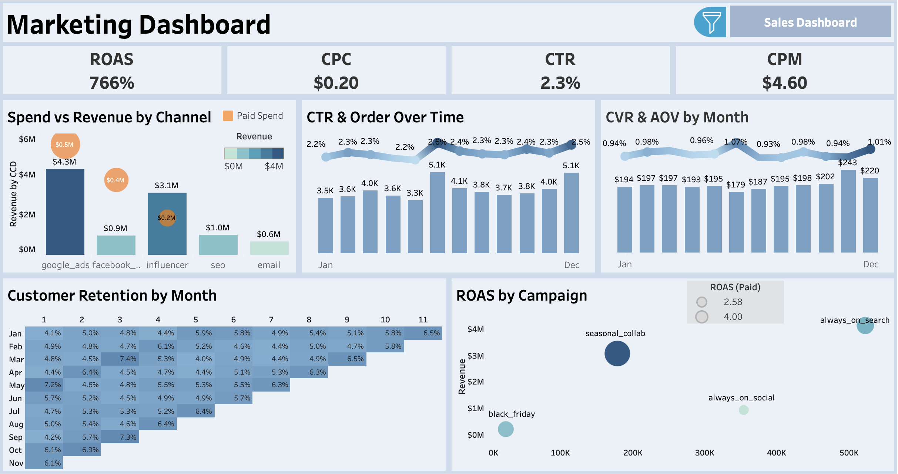
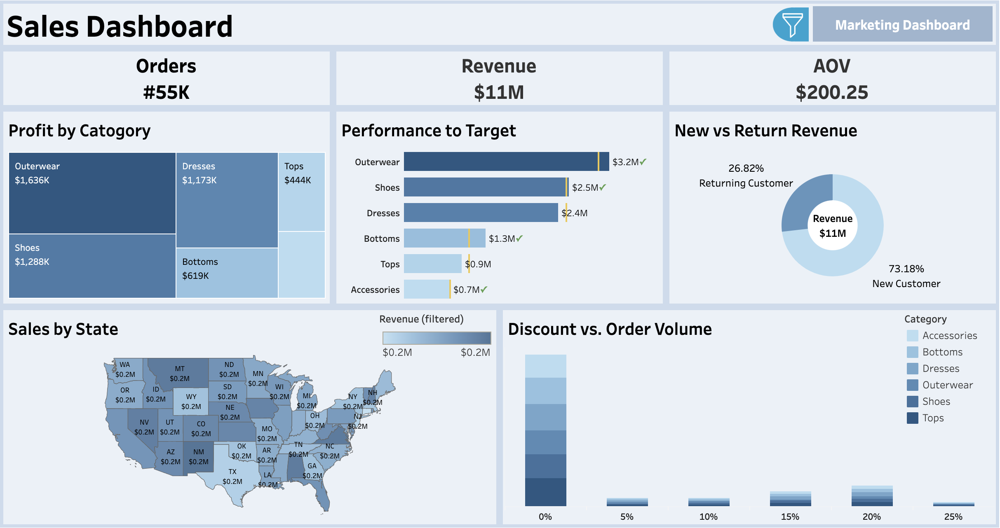

End-to-End Analytics: Data Simulation in Python and Interactive Visualization with Tableau
Tech: Python (pandas, numpy), Tableau, CSV/ETL

View Repository
Project Summary
This project showcases a comprehensive analytics solution for a hypothetical e-commerce fashion retailer. I developed a Python script to generate a realistic, one-year dataset simulating marketing activities, sales transactions, and customer behavior. This data was then used to build two interactive dashboards in Tableau—one for Marketing and one for Sales—to monitor and analyze business performance, identify key trends, and uncover strategic insights. The entire workflow, from data synthesis to visualization, demonstrates a full-cycle approach to data analytics.
 Context and Design
The goal was to create a dataset that mimics the complexities and seasonal trends of a real-world apparel business. The data generation script was designed with the following principles in mind:
- Seasonality: Sales demand and marketing effectiveness fluctuate based on the time of year. For instance, demand increases for "Outerwear" during the holidays, while summer sees a surge in "Dresses" and "Tops."
- Promotional Events: The simulation includes key retail holidays like Black Friday/Cyber Monday, along with other events like a Mid-Year Sale and post-holiday clearances. These events directly impact demand, customer conversion rates, and basket sizes.
- Multi-Channel Marketing: The business operates across several paid and organic marketing channels, including Google Ads, Facebook Ads, SEO, Email, and Influencer marketing. Each channel is configured with distinct performance parameters for spend, click-through rates (CTR), and conversion rates (CVR).
Key Code Snippets
The Python script's strength lies in its ability to model the dynamic nature of a retail environment. The following snippets are central to this simulation:
1. Seasonal Demand and Promotions Function
This function adjusts daily demand and applies promotional discounts based on the calendar. It simulates real-world events like spring refreshes, back-to-school shopping, and major holiday sales, making the dataset's trends realistic.
def season(d: pd.Timestamp):
"""Return (demand_factor, promo_discount) for the day."""
demand = 1.0
disc = 0.0
# seasonal demand lift
if d.month in (3,4): demand *= 1.10 # spring refresh
if d.month in (11,12): demand *= 1.25 # holiday
# BF/CM promo
if black_friday(d) or (d.month == 12 and d.weekday() == 0 and d.day <= 7):
disc += 0.35; demand *= 1.8
return demand, float(np.clip(disc, 0.0, 0.60))2. Order Generation Logic
This loop is the engine of the simulation. It iterates through each day, calculates the number of clicks from each marketing channel, and converts those clicks into orders using a dynamic conversion rate. This rate is influenced by seasonality, ongoing promotions, and a layer of randomness to mimic real-world unpredictability.
for d in DATES:
demand, disc = season(d)
day_mkt = marketing_spend[marketing_spend["date"] == d.date()]
cvr_multiplier = cvr_adj(d, disc)
# Expected orders by (channel, campaign) from clicks
ch_to_orders = {}
for _, r in day_mkt.iterrows():
ch, clicks = r["channel"], int(r["clicks"])
cvr = BASE_CVR[ch] * cvr_multiplier * np.random.uniform(0.85, 1.15)
conv = np.random.binomial(clicks, cvr) # Binomial trial for conversion
if conv:
ch_to_orders[(ch, r["campaign_name"])] = ch_to_orders.get((ch, r["campaign_name"]), 0) + int(conv)Challenges
- Parameter Tuning: The biggest challenge was fine-tuning the dozens of input parameters (e.g., `BASE_CTR`, `BASE_CVR`, `IMP_PER_DOLLAR`) to produce a dataset that was both realistic and insightful. Early versions of the script generated unrealistically high ROAS or illogical seasonal trends. It required several iterations of generating data, visualizing it in Tableau, and then adjusting the parameters to achieve a believable outcome.
- Modeling Complexity: Simulating the interaction between multiple variables—such as how a promotional discount should affect not just demand but also basket size and conversion rate—was complex. Ensuring these relationships felt logical and avoided generating nonsensical data was a key focus.
- Dashboard Design: In Tableau, the challenge was to distill a large amount of information into two clean, intuitive dashboards. Choosing the right charts to tell a clear story—without overwhelming the user—required careful consideration of the key business questions a stakeholder would want to answer.